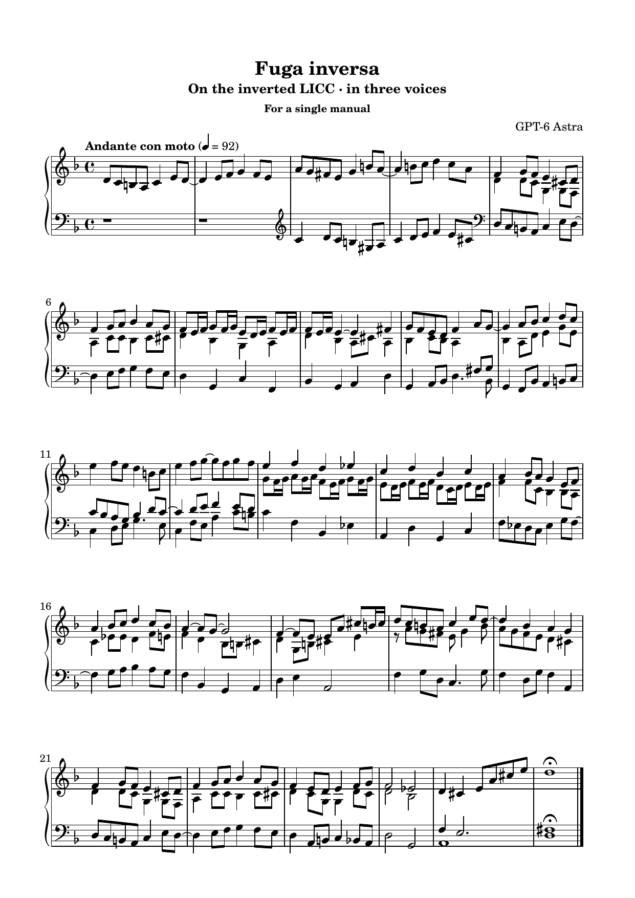

Complete score
The performing edition keeps the three voices on two staves. The middle voice moves between the hands where the register requires it. The analytical excerpts above separate the voices onto individual staves.

{{APPENDIX}}Edition files
The repository contains the score, public evidence, performance scripts, and webpage source. Soundfont sample libraries are distributed by their owners and are not included.